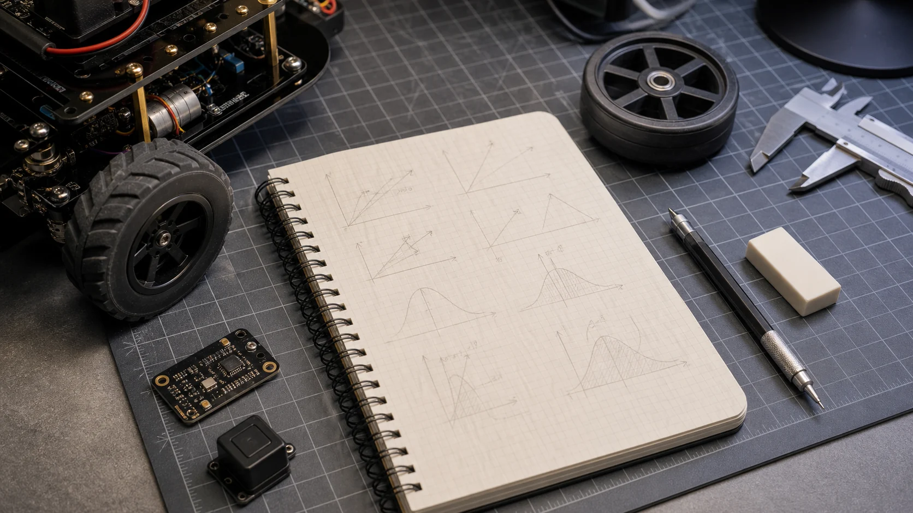

부록 R-C: 로보틱스 수학 복습 시트
R0이 "아주 밑바닥부터 천천히" 가르치는 교과서라면, R-C는 시험·실습 직전에 펴 보는 압축 요약 시트입니다. 삼각함수 · 벡터 · 선형대수 · 확률통계 · 미적분 5개 영역의 핵심 공식을 "이게 로보틱스 어디서 쓰이나"와 함께 모았습니다. 모든 수치 예제는 실제 실행 결과입니다.
📐 1. 삼각함수 (Trigonometry)
1-1. 정의 · 단위원 · 특수각
직각삼각형에서 sin θ = 높이/빗변, cos θ = 밑변/빗변, tan θ = 높이/밑변 = sin/cos. 반지름 1인 단위원 위의 점은 정확히 (cos θ, sin θ) — 그래서 로봇의 방향(heading)을 (cos, sin)으로 다룹니다.

| θ | 0° | 30° | 45° | 60° | 90° |
|---|---|---|---|---|---|
| sin | 0 | 0.5 | 0.7071 | 0.8660 | 1 |
| cos | 1 | 0.8660 | 0.7071 | 0.5 | 0 |
| tan | 0 | 0.5774 | 1 | 1.7321 | ∞ |
핵심 항등식: sin²θ + cos²θ = 1 (피타고라스), sin(−θ) = −sin θ(기함수), cos(−θ) = cos θ(우함수). 주기는 sin·cos가 360°(2π), tan은 180°(π).
import numpy as np
np.sin(np.radians(30)) # 0.5 (도→라디안 먼저!)
np.cos(np.radians(60)) # 0.5
np.tan(np.radians(45)) # 1.0
# 단위원: 방향각 θ → 단위 방향벡터
theta = np.radians(37)
heading = np.array([np.cos(theta), np.sin(theta)]) # 길이 11-2. atan2 — 로보틱스에서 가장 중요한 삼각함수
"좌표 (x, y)가 주어졌을 때 그 방향각은?"을 구하는 게 역삼각함수입니다. 그냥 atan(y/x)는 사분면을 구분 못 하고(x=0에서 0으로 나눔) 항상 −90°~90°만 반환합니다. atan2(y, x)는 부호를 보고 −180°~180° 전체를 정확히 줍니다. 인자 순서가 (y, x)인 것에 주의!
np.degrees(np.arctan2(1, 1)) # 45.0 (1사분면)
np.degrees(np.arctan2(1, -1)) # 135.0 (2사분면 — atan이라면 -45로 틀림)
np.degrees(np.arctan2(-1, -1)) # -135.0 (3사분면)
# 각도를 [-180°, 180°]로 감싸기 (heading 정규화 필수 패턴)
def wrap(a): # a: 라디안
return (a + np.pi) % (2*np.pi) - np.pi
np.degrees(wrap(np.radians(190))) # -170.0✅ 검증값
sin30=0.5 · cos45=0.7071 · tan60=1.7321 · atan2(1,-1)=135° · wrap(190°)=-170°
🤖 어디서 쓰나: 목표를 바라보는 각도(R4 차동구동 조향), 두 점 사이 방향(R0·R9), IMU yaw 정규화(R2). 로봇 코드에서 방향이 필요하면 십중팔구 atan2입니다.
➡️ 2. 벡터 (Vectors)
2-1. 크기 · 단위벡터 · 거리
벡터의 크기(노름)는 ‖v‖ = √(vₓ² + v_y² + ...) — 화살표의 길이. 단위벡터는 같은 방향에 길이만 1로 만든 것(v/‖v‖)으로 "방향만" 표현할 때 씁니다. 두 점 사이 거리는 변위 벡터의 크기 ‖b − a‖.
import numpy as np
v = np.array([3.0, 4.0])
np.linalg.norm(v) # 5.0 (3-4-5 삼각형)
v / np.linalg.norm(v) # [0.6, 0.8] 단위벡터(길이 1)
a = np.array([1.,2.]); b = np.array([4.,6.])
np.linalg.norm(b - a) # 5.0 두 점 거리2-2. 내적(Dot) — 각도 · 투영 · 수직 판정
a·b = aₓbₓ + a_yb_y + ... = ‖a‖‖b‖cos θ. 결과는 스칼라(숫자 하나). 핵심 활용 3가지:
- 두 벡터의 사잇각:
cos θ = a·b / (‖a‖‖b‖) - 수직 판정:
a·b = 0⟺ 직각(90°) - 투영(projection): b 방향으로 a가 얼마나 가는지 =
a·b̂
a = np.array([1.,0.]); b = np.array([1.,1.])
np.dot(a, b) # 1.0 (= a @ b)
ang = np.degrees(np.arccos(np.dot(a,b)/(np.linalg.norm(a)*np.linalg.norm(b))))
ang # 45.0 사잇각
np.dot([1,0],[0,1]) # 0 → 수직(직각)🤖 어디서 쓰나: 센서가 향한 방향과 목표 방향의 정렬도(코사인 유사도), 빛/힘의 투영, 로봇이 목표를 "앞에" 두고 있는지 판정.
2-3. 외적(Cross) — 수직 벡터 · 방향(부호) · 넓이
3D에서 a × b는 a와 b에 동시에 수직인 벡터를 주고, 크기는 두 벡터가 만드는 평행사변형 넓이(‖a‖‖b‖sin θ)입니다. 방향은 오른손 법칙. 2D에선 스칼라 aₓb_y − a_ybₓ가 되어 회전 방향(왼/오)을 부호로 알려 줍니다(양수=반시계).
np.cross([1,0,0], [0,1,0]) # [0, 0, 1] z축(둘 다에 수직)
# 2D 외적(스칼라) = 좌/우 회전 판별
def turn(a, b):
return a[0]*b[1] - a[1]*b[0] # >0 반시계(좌), <0 시계(우)
turn([1,0], [0,1]) # 1 (>0 → 좌회전)✅ 검증값
norm[3,4]=5.0 · unit=[0.6 0.8] · dot(a,b)=1.0(45°) · 수직내적=0 · cross[1,0,0]×[0,1,0]=[0 0 1]
🤖 어디서 쓰나: 표면 법선(normal) 계산, 토크 τ = r × F, 점이 경로의 왼쪽/오른쪽인지(차선 이탈·경로 추종 R9), 회전축 계산.
🔢 3. 행렬과 선형대수 (Linear Algebra)
3-1. 행렬곱 · 전치 · 역행렬
행렬은 "벡터를 다른 벡터로 보내는 변환"입니다(회전·확대·투영). 행렬곱은 변환의 합성이고 순서가 중요(AB ≠ BA). Aᵀ(전치)는 행↔열 교환, A⁻¹(역행렬)은 변환을 되돌립니다(A A⁻¹ = I).
import numpy as np
A = np.array([[2.,0.],[0.,3.]]); B = np.array([[1.,1.],[0.,1.]])
A @ B # 행렬곱(@ 권장). A @ B ≠ B @ A!
A.T # 전치
np.linalg.inv(A) # 역행렬 → [[0.5,0],[0,0.333]]
np.allclose(A @ np.linalg.inv(A), np.eye(2)) # True3-2. 행렬식(det) · 연립방정식 풀기
행렬식 det(A)는 그 변환이 넓이/부피를 몇 배로 바꾸는지입니다. det = 0이면 차원이 찌부러져(역행렬 없음) 정보가 소실 — 기구학의 특이점이 바로 이것(R4). 연립방정식 Ax = b는 np.linalg.solve로 풀며, 역행렬을 직접 구하는 것보다 안정적이고 빠릅니다.
np.linalg.det(np.array([[2.,0.],[0.,3.]])) # 6.0 (넓이 6배)
# Ax = b → x
A = np.array([[2.,1.],[1.,3.]]); b = np.array([3.,5.])
np.linalg.solve(A, b) # [0.8, 1.4] (inv 쓰지 말 것)3-3. 회전행렬의 성질 · 고유값 맛보기
회전행렬 R의 3대 성질(R1): ① RᵀR = I(직교) ② R⁻¹ = Rᵀ(역회전이 공짜) ③ det(R) = +1(넓이 보존, 반사 없음). 그래서 변환을 거꾸로 풀 때 비싼 역행렬 대신 전치만 쓰면 됩니다.
고유값/고유벡터: A v = λ v — 변환해도 방향이 안 바뀌고 크기만 λ배 되는 특별한 벡터 v와 그 배율 λ. 공분산 행렬의 고유벡터는 불확실성 타원의 축 방향이 되어 위치추정(R9)에서 오차 분포를 그릴 때 씁니다.
th = np.radians(37)
R = np.array([[np.cos(th),-np.sin(th)],[np.sin(th),np.cos(th)]])
np.linalg.det(R) # 1.0, R.T @ R == I → True
# 대칭(공분산형) 행렬의 고유값 — 항상 실수
w, v = np.linalg.eigh(np.array([[2.,1.],[1.,2.]]))
w # [1., 3.] (고유값 = 타원 축 길이²의 척도)✅ 검증값
det([[2,0],[0,3]])=6.0 · solve→[0.8 1.4] · det(R)=1.0, RᵀR=I · eig([[2,1],[1,2]])=[1,3]
🤖 어디서 쓰나: 좌표 변환(R1·R7), FK/IK·자코비안(R4), 특이점 판정(det J=0), 공분산·불확실성 타원(R9 칼만).
🎲 4. 확률과 통계 (Probability & Statistics)
4-1. 평균 · 분산 · 표준편차
평균(μ)은 중심, 분산(σ²)은 "퍼진 정도"의 제곱 평균, 표준편차(σ)는 그 제곱근으로 데이터와 같은 단위라 직관적입니다. 센서 노이즈의 세기를 σ로 표현하고, 칼만 필터는 이 분산을 추적합니다(R2·R9).
import numpy as np
x = np.array([2.,4.,4.,4.,5.,5.,7.,9.])
x.mean() # 5.0 평균 μ
x.var() # 4.0 분산 σ²
x.std() # 2.0 표준편차 σ4-2. 가우시안(정규분포) · 68-95-99.7 법칙
센서 노이즈는 대개 종 모양 가우시안 분포 N(μ, σ²)를 따른다고 가정합니다(칼만의 핵심 전제). 외우면 좋은 68-95-99.7 법칙: 데이터의 약 68%가 μ±1σ, 95%가 μ±2σ, 99.7%가 μ±3σ 안에 들어옵니다. "3σ를 벗어나면 이상치(outlier)"라고 보는 근거입니다.
from math import erf, sqrt
def within(k): # μ±kσ 안에 들어올 확률
return erf(k / sqrt(2))
within(1) # 0.6827 (≈68%)
within(2) # 0.9545 (≈95%)
within(3) # 0.9973 (≈99.7%)4-3. 조건부확률 · 베이즈 정리 (위치추정의 뿌리)
베이즈 정리는 "새 증거를 보고 믿음을 갱신"하는 공식입니다: P(A|B) = P(B|A)·P(A) / P(B). 사전확률 P(A)(원래 믿음)을 측정 B로 보정해 사후확률 P(A|B)를 얻습니다. 이것이 칼만 필터·파티클 필터·SLAM·점유격자 갱신의 수학적 뿌리입니다(R9).
# 예: 부품 고장 진단
# 사전 고장률 P(고장)=1%, 센서 민감도 P(+|고장)=99%, 오경보 P(+|정상)=5%
pf, sens, fp = 0.01, 0.99, 0.05
p_pos = sens*pf + fp*(1-pf) # 양성이 나올 전체 확률
post = sens*pf / p_pos # P(고장 | 양성)
round(post, 4) # 0.1667 → 양성이어도 실제 고장 확률은 16.7%뿐!✅ 검증값
μ=5.0 σ²=4.0 σ=2.0 · 가우시안 1σ68.3% 2σ95.5% 3σ99.7% · 베이즈 사전1%→사후16.7%
🤖 직관: 드물게 일어나는 일(고장 1%)은 센서가 양성을 줘도 여전히 드뭅니다. 로봇이 "한 번 본 것"을 맹신하지 않고 사전 정보와 융합해야 하는 이유 — 그게 확률적 위치추정의 본질입니다.
∫ 5. 미적분 맛보기 (Calculus for Control)
5-1. 미분 = 변화율, 적분 = 누적
제어와 운동을 이해하는 데 딱 두 개념이면 충분합니다. 미분은 "순간 변화율"(기울기) — 위치를 미분하면 속도, 속도를 미분하면 가속도. PID의 D항이 오차의 미분입니다. 적분은 "쌓아 더하기"(곡선 아래 넓이) — 속도를 적분하면 이동 거리. PID의 I항이 오차의 적분이고, 오도메트리가 속도의 적분입니다.
| 양 | 미분 → | ← 적분 |
|---|---|---|
| 위치 x | 속도 v = dx/dt | x = ∫v dt |
| 속도 v | 가속도 a = dv/dt | v = ∫a dt |
| 오차 e | D항 = de/dt | I항 = ∫e dt |
5-2. 수치 미분 · 적분 (코드로 하는 미적분)
로봇은 연속 함수가 아니라 이산 시간 샘플(매 dt마다 측정)을 다룹니다. 그래서 미분은 차분((현재−이전)/dt), 적분은 누적합(합 × dt, 오일러 적분)으로 근사합니다. PID 한 줄, 오도메트리 한 줄이 정확히 이 형태입니다.
import numpy as np
dt = 0.01
t = np.arange(0, 1, dt)
v = 2.0 * t # 속도가 시간에 비례(가속)
# 수치 미분: 가속도 ≈ 차분/dt → 일정한 2.0
a = np.gradient(v, dt) # ≈ 2.0
# 수치 적분(오일러): 이동거리 = Σ v·dt
x = np.cumsum(v) * dt # 0.5*2*1² = 1.0 에 근접
round(x[-1], 3) # ≈ 0.99 (이산 근사 오차)
# PID/오도메트리에서 쓰는 형태 (한 스텝)
deriv = (e - prev_e) / dt # D항 = 오차의 수치 미분
integral += e * dt # I항 = 오차의 수치 적분(누적)🤖 어디서 쓰나: PID 제어(R5)의 D·I항, 휠 오도메트리(R4 속도→자세 적분), IMU 적분(가속도→속도→위치, 단 드리프트 누적 R2), 신호 변화율 검출.
📑 수학 영역 ↔ 본편 챕터 색인
| 수학 영역 | 핵심 도구 | 주로 쓰는 곳 |
|---|---|---|
| 삼각함수 | sin/cos · atan2 · wrap | R0 · R4 |
| 벡터 | norm · dot · cross | R0 · R1 |
| 선형대수 | @ · inv · det · solve · eig | R1 · R4 |
| 확률통계 | μ/σ · 가우시안 · 베이즈 | R2 · R9 |
| 미적분 | 차분 · cumsum · 오일러적분 | R5 · R4 |
💡 더 천천히 배우고 싶으면 R0. 수학 리부트로, 코드 패턴만 빠르게 찾으려면 부록 R-A 치트시트로 가세요. 이 시트는 그 둘 사이의 "복습용 압축본"입니다.